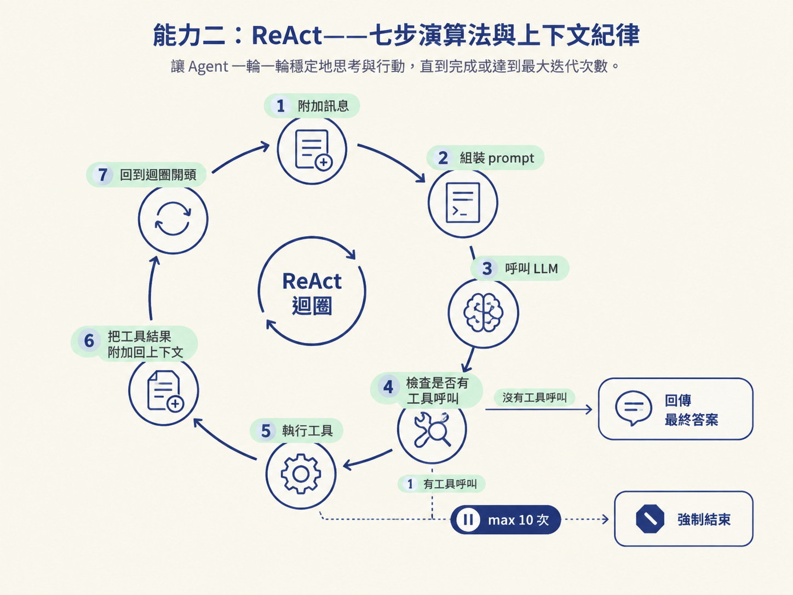
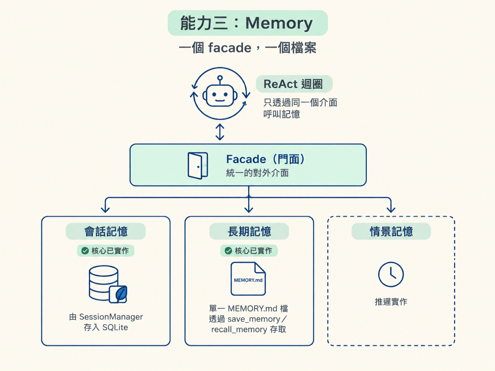
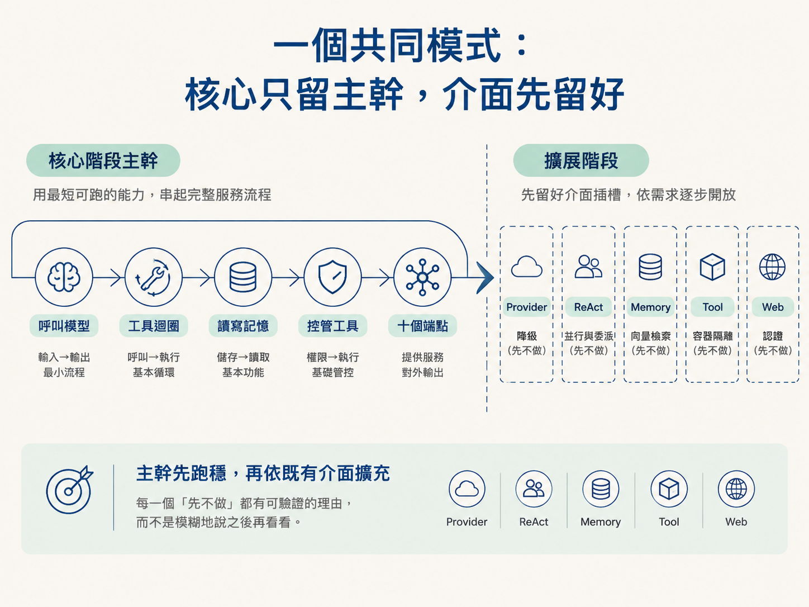

一個 Agent 系統很容易越做越胖：Provider 想處理降級，ReAct 想平行跑工具，Memory 想接向量資料庫，Web 又想一次補齊認證與即時串流。結果每一層都很忙，卻很難確認最基本的一輪呼叫是否可靠。OryxOS 的做法相反：先把五項能力各自的責任切清楚，只留下能跑通主幹的部分，其他需求保留介面，等核心穩定後再擴充。
看完這篇，你應該能說明技術方案對 Provider、ReAct、Memory、Tool、Web 各做了哪些關鍵決定，也能分辨哪些功能是刻意留到擴展階段，而不是尚未想清楚。
Provider 的責任被壓到最小：把「呼叫一個模型」收斂成一個服務，內部使用 Spring AI 的 ChatClient 連接不同供應商。它只做三件事：選模型、發出呼叫，以及把工具描述轉成模型看得懂的 schema。
成本與可靠性的花招，核心階段全部不做。這裡沒有失敗降級，也沒有多路競速（hedge racing）。模型出錯時，Provider 直接把錯誤往上拋給 Agent。這個取捨讓責任很清楚：Provider 負責把請求送到正確的模型，Agent 再決定要不要重試或如何處理失敗。
多 Provider 時有一個很具體的陷阱：系統會同時註冊多個型別相同的 ChatModel bean，光靠型別掃描無法知道要選哪一個。因此 OryxOS 不使用型別掃描，而是維護一份「provider 名稱 → ChatModel」的顯式映射。每個 Provider 宣告唯一名稱，Profile 再用名稱引用它。
原則很簡單：映射不明確，多 Provider 就會壞。成本透明也先做基本盤，只把 tokens、provider 與模型寫入 llm_calls 表；完整的成本聚合和儀表板則留到擴展階段。
ReAct 迴圈的重點不是把流程做得花俏，而是讓 Agent 一輪一輪穩定地思考與行動。它遵循七步：附加訊息、組裝 prompt、呼叫 LLM；如果沒有工具呼叫，就回傳最終答案；否則執行工具、把結果附加回上下文，再繼續迴圈；直到完成，或撞到最大迭代次數而強制結束。

預設最多執行 10 次，也可以在 Profile 覆寫：
loop (max 10):
context.append(message)
prompt = build()
resp = llm(prompt)
if resp.hasToolCall:
result = execute(resp.toolCall)
context.append(result)
else:
return resp這段流程拆成三個模組。ReActLoop 是幾十行的迴圈引擎；PromptBuilder 負責把四部分組起來：system prompt、Memory 注入、對話歷史，以及可用工具清單；ToolExecutor 則負責找工具、通過沙箱檢查、執行工具、包裝成 ToolResult，最後寫入 tool_invocations。
上下文管理也有明確紀律：保留 system prompt，加上最近 N 輪對話，預設是 20 輪。這個限制很重要，因為上下文不是越長越聰明；內容持續堆疊後，模型要在更多訊息中尋找真正相關的資訊，反而可能抓不到重點。
核心階段刻意不並行呼叫工具、不做子 Agent 委派，也不做串流輸出。這不是能力不足，而是先固定「一輪一輪正確地跑」這條主幹，避免同時引入平行執行、生命週期管理與部分結果處理等額外複雜度。
Memory 在設計上分成三層，但核心階段只實作其中兩層，並用一個統一的 facade（門面）包起來。對 ReAct 來說，記憶不需要分辨底層有幾種儲存方式，只要呼叫同一個介面即可。

| 層 | 核心階段 | 做法 |
|---|---|---|
| 會話記憶 | 做 | 由 SessionManager 存進 SQLite |
| 長期記憶 | 做 | 一個 MEMORY.md 檔，用 save_memory／recall_memory 兩個工具存取 |
| 情景記憶 | 推遲 | 核心階段不做 |
長期記憶的實作很樸素：就是一個 Markdown 檔，以日期作為標題列，格式不嚴格，交給 LLM 自己解讀。它提供四個動作：append、load、recallByKeyword（關鍵字召回），以及 truncateIfNeeded（超長截斷）。
Memory 注入 system prompt 的方式也很直接：每次組 prompt 都重新讀取整個 MEMORY.md，不使用快取。因此 save_memory 寫入後，下一輪就能看到最新內容。代價是多一次檔案 I/O，約 1–2ms；核心階段認為這個成本可以接受，換來的是行為簡單、更新不會卡在過期快取裡。
還有一個常見混淆點：MEMORY.md 和 USER.md 是兩回事。USER.md 是使用者手寫的 Bootstrap 檔，OryxOS 對它唯讀，代表「使用者的初始設定」；MEMORY.md 則是 Agent 透過 save_memory 寫入的長期記憶，代表「Agent 的成長記錄」。兩者都會進入 system prompt，但來源與生命週期完全不同。
核心階段也不做自動事實抽取、語義檢索、記憶 wiki、矛盾偵測或壓縮。它只做簡單截斷，並在介面上預留向量檢索給擴展階段。
所有工具都收斂到 OryxTool 介面，只有四個方法：getName、getDescription、getInputSchema（JSON Schema），以及 execute（輸入 JSON，輸出 ToolResult）。ToolResult 包含四個欄位：成功旗標、內容、錯誤，以及是否可重試。
內建工具、@Tool 外掛和 MCP 工具最後都包成 OryxTool，因此 ReAct 不需要知道它們來自哪裡。它只需要依照同一套抽象取得描述、傳入參數，並處理結果。
外掛擴展依成本分成三級，原則是：能用低成本解決，就不要直接採用高成本方案。
| 級別 | 形式 | 什麼時候用 |
|---|---|---|
| 第一級 | 零程式碼：SKILL.md + 現成 MCP | 能用現成能力解決時，優先使用這級 |
| 第二級 | 輕程式碼：自寫 MCP server | 需要一點客製邏輯時 |
| 第三級 | 重程式碼：Java @Tool Bean | 需要深度接進企業系統時 |
第一級特別容易被誤解：它不是工作流程引擎。OryxOS 只把 SKILL.md 的內容載入 system prompt，由 LLM 自己決定要使用哪些工具，以及如何組合它們。OryxOS 不解析任務步驟，也不代替 LLM 執行流程。這正是 SkillLoader 被歸在 ContextLoader，而不是 Tool 模組的原因。
工具註冊與安全檢查集中在兩個元件。ToolRegistry 啟動時掃描 @Tool 方法，並加入 MCP 註冊的工具，最後全部包成 OryxTool；SandboxChecker 則在執行前檢查三類白名單：檔案路徑、shell 指令與 HTTP 網域。違規時直接拋出例外。核心階段不做容器隔離，容器隔離留到擴展階段。
Web 層使用 Spring MVC，監聽埠 8080，以虛擬執行緒執行，並由 oryxos serve 啟動。它由六個 ApiController 組成：Session、Agent、Profile、Memory、Tool、System，另外還有 GlobalExceptionHandler 與 OpenAPI 文件。
Controller 的職責保持很薄：只做驗證、包裝回應和處理錯誤，商業邏輯全部委派給 core 的服務。這樣 Web 層只是邊界，不會把核心規則散落在各個 HTTP 端點裡。
核心階段只做 10 個端點：Session 四類端點（建立、送訊息、取歷史、歸檔）、Agent 直接 invoke、查詢類端點（profiles／memory／tools），以及維運類端點（health／info）。其他 15 個端點推遲。
核心不做認證，假設系統執行在內網；API Key 與 JWT 留到擴展階段。SSE、WebSocket、RBAC 和限流也同樣不在核心範圍內。
不過，邊界仍然寫得很清楚：訊息大小上限是 32KB、session 歷史最多保留 100 條、Agent 呼叫超過 60 秒就回傳 504，錯誤碼則使用 HTTP status 加上內部碼（400／404／500／503）。核心階段的 CORS 全開，這正是「內網假設」的直接體現。
把五個能力放在一起看，會發現同一個模式不斷出現：核心階段只實作最短可跑的主幹，把其他功能明確推遲，但先把介面留好。
Provider 不做降級；ReAct 不做並行與委派；Memory 不接向量庫；Tool 不做容器隔離；Web 不做認證。每一個「先不做」都有可驗證的理由，而不是模糊地說之後再看看。

因此，這份技術方案最後留下的不只是五組元件，而是一組可執行的邊界：核心先能正確呼叫模型、完成工具迴圈、讀寫記憶、控管工具，並透過十個端點提供服務；等這條路徑真的跑穩，再依既有介面加入降級、並行、向量檢索、隔離與認證。